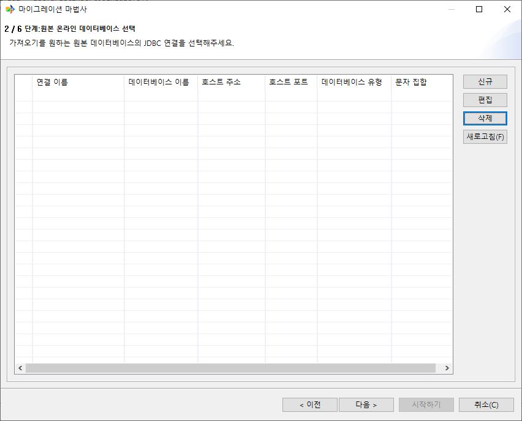

시작하기¶
본 프로그램을 처음 사용하는데 참고할 수 있는 간략한 사용법을 설명한다.
공통 부분¶
MiT의 기능 대부분에 공통으로 적용되는 기능이다.
이관 타입 선택¶

이관을 실행하기 위해 ‘새 마이그레이션’ 버튼을 선택하면 표시되는 화면.
source type¶
화면의 왼쪽 영역에 해당하는 부분이다.
target으로 이관할 데이터를 가져올 source를 선택하는 부분이다.
현재 선택 가능한 DBMS는 CUBRID, Tibero, GraphDB(NEO4J, turbograph++)가 있다.
현재 GraphDB는 CUBRID로의 출력만 지원한다 (G2R)
destination type¶
화면의 오른쪽 영역에 해당하는 부분이다.
target의 출력을 어떻게 할 것인지 설정하는 부분이다.
Online CUBRID database¶
target을 CUBRID로 설정한다. 해당 옵션은 source가 GraphDB일 때만 지원한다.
Online Graph database¶
target을 GraphDB로 설정한다. 해당 옵션은 source가 CUBRID 또는 Tibero일 때만 사용 가능하다.
Local GRAPH dump files¶
target을 dump file로 설정한다. 해당 옵션은 source가 CUBRID 또는 Tibero일 때만 사용 가능하다.
Local CSV dump files¶
target을 csv file로 설정한다. 해당 옵션은 source가 CUBRID 또는 Tibero일 때만 사용 가능하다.
연결 선택¶
원본DB의 connection을 관리한다.
미리 생성된 연결을 선택하거나 유효한 연결을 새로 생성하여 선택한 뒤 대상DB 선택 페이지 또는 다른 설정 페이지로 진행할 수 있다.
연결 생성¶
connection을 생성한다

데이터베이스 종류¶
현재 선택된 데이터베이스의 타입을 나타낸다. 현재 원본 DB는 CUBRID가 유일하다.
JDBC 드라이버 선택¶
찾아보기를 눌러 JDBC 드라이버를 추가할 수 있다. 만약 한번 진행했을 경우 dropbox 메뉴를 통해 기존에 사용했던 JDBC를 사용할 수 있다.
연결 이름¶
원본 DB 선택 페이지에서 보여질 이름을 입력할 수 있다.
호스트 주소¶
원본 DB가 있는 IP주소를 입력한다.
연결 포트¶
DB의 포트 번호를 입력한다. 기본값은 CUBRID의 기본 포트인 33000으로 되어있다.
데이터베이스 이름¶
원본 DB내부의 schema또는 DB이름을 입력한다. (ex. CUBRID의 샘플DB인 demodb, NEO4J의 샘플DB인 neo4j)
문자 집합¶
원본 DB에서 사용중인 인코딩 타입을 설정한다. CUBRID가 지원하는 인코딩 타입은 아래와 같다.
UTF-8(기본)
MS949
ISO-8859-1
EUC-KR
EUC-JR
GB2312
GBK
사용자 이름¶
DB에 접속하기 위한 계정 이름을 입력한다.
비밀번호¶
계정의 비밀번호를 입력한다.
JDBC 고급 설정¶
JDBC URL을 커스텀 할 수 있다. 만약 DB연결시 parameter가 필요할 경우 해당 옵션에서 사용할 수 있다.
테스트¶
입력된 정보를 통해 연결을 테스트한다.

이후 진행¶
각 이관 기능 별 세부 사항은 다음을 참고한다.